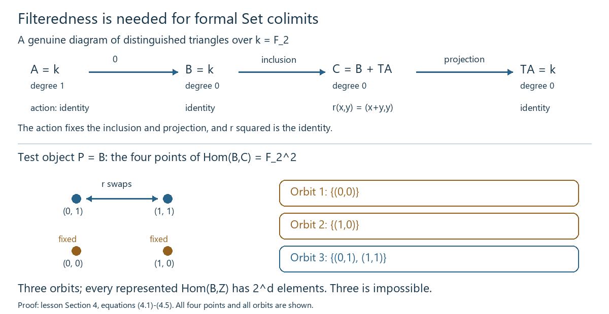

Draft lesson.
Representing filtered triangles by a finite stage
Representability of a formal colimit says how every object tests it. For a filtered diagram of distinguished triangles, representability of the first two formal colimits forces representability of the third. The proof brings two identity maps and one equation to a single stage, completes an actual triangle comparison there, and tests that comparison on every object.
Use the universe and choice convention of Universes and small categories. Work in an ambient universe containing the index and the Hom sets used below; all pointwise colimits mentioned are small there. Filteredness itself is a condition on finite diagrams and does not assert smallness in a smaller universe. Let \(D\) be a triangulated category with specified translation equivalence \(T\), a chosen inverse \(S\), and its unit and counit. The translation comparisons are those of Translations, coherent powers and universal triangle comparisons, Section 1. We use the rotation convention \((g,h,-Tf)\).
1. Formal objects, elements and exactness
Write \(yX(P)=\operatorname{Hom}_D(P,X)\). For a diagram \(a:I\to D\), its formal colimit is the Set-valued presheaf
\[ F_a(P)=\mathop{\mathrm{colim}}_{i\in I}\operatorname{Hom}_D(P,a_i). \tag{1.1} \]Its structural transformation \(y(a_i)\to F_a\) will be denoted \(q_i^a\). A representation is a specified presheaf isomorphism \(F_a\simeq yA\). Full faithfulness of Yoneda converts each structural transformation into an actual map \(a_i\to A\), and converts transformations between represented formal objects into actual maps. Formal colimits and test objects, Sections 1 and 5 proves these facts and the stronger absolute-colimit property of such representations.
The Yoneda correspondence here is explicit: a transformation \(\eta:yX\to F\) is determined by \(e=\eta_X(1_X)\), because naturality gives \(\eta_P(v)=F(v)(e)\). Conversely this formula defines a natural transformation for every \(e\in F(X)\). For \(F=yY\), it is postcomposition with the corresponding map \(X\to Y\), so it is additive on every Hom group. Composites with the structural maps therefore turn any representation in (1.1) into a group isomorphism at every test object, using the common-stage addition from Lemma 1.1.
A filtered category is nonempty, has a common receiving object for two objects, and permits equalization of parallel arrows by postcomposition. We need the following precise element rule, proved in Filtered stages and finite limits, Sections 1–3. Every element of (1.1) has a representative at one stage. If two elements at the same stage have equal colimit classes, some arrow out of that stage makes them equal. For the latter formulation, a common-target witness may initially use different arrows \(u,v:i\to j\); postcompose an arrow equalizing \(u,v\). The resulting single arrow witnesses the equality. A finite list of elements and equalities can consequently be brought together and repaired by finitely many such operations.
Lemma 1.1. When \(I\) is filtered, the presheaf \(F_a\) is canonically additive, and its values are also the colimits of the Hom groups in \(\mathsf{Ab}\). Filtered colimits of exact sequences of abelian groups remain exact.
Proof. Two representatives can be transported to a common stage and added there; the equality rule makes this independent of the receiving object and of the representatives. Negatives and zero are taken at a stage. A finite list can be transported together, so the group identities follow from the stage group identities. Maps out of this group are precisely compatible families of group homomorphisms out of the stage groups. This gives the group colimit and its underlying Set colimit simultaneously. Precomposition in \(D\) is additive at every stage, so the construction is natural in \(P\).
For exactness, let \(U_i\xrightarrow{d_i}V_i\xrightarrow{e_i}W_i\) be a diagram of sequences exact at \(V_i\). Consecutive maps in the colimit compose to zero. Suppose \([i,v]\) maps to zero in the colimit of \(W\). By the equality rule there is \(u:i\to j\) with \(W(u)e_i(v)=0\). Naturality gives \(e_j(V(u)v)=0\), so stage exactness supplies \(z\in U_j\) with \(d_j(z)=V(u)v\). Then \([j,z]\) maps to \([i,v]\). This proves the reverse containment at the middle term. The same argument applies to every position of any finite or long exact sequence, including a position next to zero. \(\square\)
For translation, the adjoint-equivalence Hom correspondence supplies a natural bijection
\[ \operatorname{Hom}_D(P,TX)\simeq\operatorname{Hom}_D(SP,X). \tag{1.2} \]Explicitly, write the inverse data as \(\eta:1\to ST\), \(\epsilon:TS\to1\), with their two triangle identities. The bijection sends \(v:P\to TX\) to \(\eta_X^{-1}S(v)\); its inverse sends \(a:SP\to X\) to \(T(a)\epsilon_P^{-1}\). Naturality of \(\epsilon\) and \(T\eta_X=\epsilon_{TX}^{-1}\) make the first composite \(v\). Naturality of \(\eta\) and \(S\epsilon_P\,\eta_{SP}=1\) make the other composite \(a\). These formulas are additive and natural in both arguments.
Apply the bijection at each index and then take the pointwise colimit. Thus a representation \(F_a\simeq yA\) gives a representation \(F_{Ta}\simeq y(TA)\). This correspondence uses the chosen inverse comparisons; it does not require literal equality \(ST=1\). Naturality in \(X\) intertwines every translated structural map. Iterate these comparisons, and use the inverse equivalence for negative translates, to obtain the same assertion for all positive and negative translates.
2. Lift the identity maps into one actual triangle
Suppose \(I\) is filtered and there are natural transformations
\[ a\xrightarrow{f}b\xrightarrow{g}c\xrightarrow{h}Ta \tag{2.1} \]whose value at every index is a distinguished triangle. Assume specified representations
\[ F_a\simeq yA,\qquad F_b\simeq yB. \tag{2.2} \]Denote the actual structural maps by \(r_i:a_i\to A\) and \(s_i:b_i\to B\). The induced formal transformation \(F_f\) is represented by an actual map \(u:A\to B\). Naturality says
\[ s_i f_i=u r_i. \tag{2.3} \]Choose a distinguished completion
\[ A\xrightarrow{u}B\xrightarrow{v}C\xrightarrow{w}TA. \tag{2.4} \]Lemma 2.1. At some index \(j\) there are actual maps \(x:A\to a_j\), \(z:B\to b_j\), and \(t:C\to c_j\) making (2.4) map to the stage triangle. They satisfy
\[ r_jx=1_A,\qquad s_jz=1_B,\qquad f_jx=zu,\qquad g_jz=tv,\qquad h_jt=T(x)w. \tag{2.5} \]Proof. The identity \(1_A\), under (2.2) evaluated at \(A\), is represented by a map \(x_0:A\to a_i\). The representation converts its colimit class into \(r_ix_0\), so \(r_ix_0=1_A\). Likewise \(1_B\) is represented by \(z_0:B\to b_k\) with \(s_kz_0=1_B\). Choose a common receiving index and transport both maps there, calling them \(x,z\) for now. Their retraction identities persist because the \(r_i,s_i\) are cocones.
The two maps \(f_i x\) and \(zu\), now with the same target \(b_i\), have equal classes in \(F_b(A)\): their images under its specified representation are
\[ s_i f_i x=u r_i x=u=s_i zu. \tag{2.6} \]The equality rule provides one further arrow to a stage \(j\) where their transported maps agree. Naturality of \(f\) identifies the transported first map with \(f_jx\); hence the first square commutes literally in \(D\). The two retraction identities remain true. Axiom TR3, applied to (2.4) and the stage triangle, gives \(t\) satisfying the other two squares in (2.5). No choices of cones or comparison maps at other indices are required. \(\square\)
The map \(t\), followed by the structural transformation, defines
\[ \Phi:yC\xrightarrow{y(t)}y(c_j)\xrightarrow{q_j^c}F_c. \tag{2.7} \]The three squares (2.5), after passage to formal colimits, compare the actual triangle (2.4) with the entire formal triangle (2.1). The first two comparison transformations are exactly the isomorphisms inverse to the specified representations (2.2), because \(r_jx=1_A\) and \(s_jz=1_B\).
3. The third comparison is a representation
Theorem 3.1. The transformation \(\Phi\) in (2.7) is an isomorphism of presheaves. Under this representation of \(F_c\), the induced formal maps give exactly the distinguished triangle (2.4).
Proof. Fix any test object \(P\). Applying \(\operatorname{Hom}_D(P,-)\) to (2.4) gives an exact five-term segment
\[ \operatorname{Hom}(P,A)\longrightarrow\operatorname{Hom}(P,B) \longrightarrow\operatorname{Hom}(P,C) \longrightarrow\operatorname{Hom}(P,TA) \longrightarrow\operatorname{Hom}(P,TB). \tag{3.1} \]The full Hom exactness follows from TR3 and rotations, with the actual signs, as proved in Triangles, finite universal maps and the limits of cohomology, Lemma 1.1. At every stage (2.1) gives the corresponding exact segment. Lemma 1.1 therefore gives an exact lower row
\[ F_a(P)\longrightarrow F_b(P)\longrightarrow F_c(P) \longrightarrow F_{Ta}(P)\longrightarrow F_{Tb}(P). \tag{3.2} \]The map of triangles from Lemma 2.1 gives a commuting comparison from (3.1) to (3.2). Its middle map is \(\Phi_P\). The first, second, fourth and fifth vertical maps are bijective: for the last two use (1.2) and the translated versions of the actual retraction identities. We give the needed group argument explicitly.
Write a commuting comparison of exact rows as
\[ U_1\xrightarrow{d_1}U_2\xrightarrow{d_2}U_3 \xrightarrow{d_3}U_4\xrightarrow{d_4}U_5, \qquad V_1\xrightarrow{e_1}V_2\xrightarrow{e_2}V_3 \xrightarrow{e_3}V_4\xrightarrow{e_4}V_5, \tag{3.3} \]with comparison maps \(\ell_i\), and assume \(\ell_1,\ell_2,\ell_4,\ell_5\) are bijective. If \(\ell_3x=0\), commutativity and injectivity of \(\ell_4\) give \(d_3x=0\), so \(x=d_2y\). Since \(e_2\ell_2y=0\), there is \(z\in V_1\) with \(e_1z=\ell_2y\). Lift \(z=\ell_1a\). Commutativity and injectivity of \(\ell_2\) give \(y=d_1a\), whence \(x=0\).
For surjectivity, take \(b\in V_3\). Lift \(e_3b\) through \(\ell_4\), obtaining \(q\in U_4\). Then \(\ell_5d_4q=e_4e_3b=0\); injectivity of \(\ell_5\) gives \(d_4q=0\). Choose \(x\in U_3\) with \(d_3x=q\). Now \(e_3(b-\ell_3x)=0\), so \(b-\ell_3x=e_2y\) for some \(y\in V_2\). Lift \(y=\ell_2z\). Then \(b=\ell_3(x+d_2z)\). This proves bijectivity of the middle map.
Consequently \(\Phi_P\) is bijective for every \(P\). The transformation \(\Phi\) is already natural by construction, and pointwise inverse maps form its natural inverse: the naturality square for \(\Phi\), multiplied by the two pointwise inverses, is the required square. Thus \(F_c\) is represented by \(C\).
The comparison squares say \(\Phi\,y(v)=F_g\) after the specified identification of \(F_b\) with \(yB\), and \(F_h\Phi=y(w)\) after the specified identification of \(F_{Ta}\) with \(y(TA)\). The first arrow is \(y(u)\) by its definition. Full faithfulness of Yoneda therefore identifies all three induced arrows with \(u,v,w\). Their triangle is distinguished because it is the chosen completion (2.4). We have used a morphism from a known distinguished triangle; exactness of the lower row alone was never asserted to characterize distinguished triangles. \(\square\)
There are also actual canonical cocone maps \(c_i\to C\): apply \(\Phi^{-1}\) to each \(q_i^c\) and use Yoneda. Their naturality and all three triangle squares with \(r_i,s_i\) follow from the same commuting formal squares. Different stage witnesses, TR3 fillers, or completions give representing objects equipped with a unique isomorphism that preserves these cocones. Indeed an isomorphism is forced to be the composite of their specified isomorphisms with \(F_c\); Yoneda supplies the actual map and its inverse. The same squares show that it preserves \(v\) and \(w\). This uniqueness concerns the formal representation with its structural maps; it does not assert uniqueness of every TR3 filler.
4. Two examples show what the hypotheses do
A nonzero stage map that disappears formally. Let \(k\) be a field, let \(D=K^b(\mathsf{Vect}^{\mathrm{fd}}_k)\), and take \(A=k\) in degree \(1\), \(B=k\) in degree \(0\). Chain homotopies, mapping cones and triangles, Sections 1–5 proves the homotopy/cone triangulation. It restricts to these bounded finite-dimensional complexes because shifts, finite sums and cones preserve boundedness and finite-dimensional terms. The zero map has distinguished cone triangle
\[ A\xrightarrow0B\xrightarrow{\iota}C=B\oplus TA \xrightarrow{\pi}TA. \tag{4.1} \]Let every transition on \(A,B\) be zero and every transition on \(C\) be
\[ n=\begin{pmatrix}0&1\\0&0\end{pmatrix}. \tag{4.2} \]These three transitions form a morphism of (4.1) to itself: \(n\iota=0\), \(\pi n=0\), and the first square is zero. Their powers define a diagram on \(\mathbb N\). Every Hom element in the first two diagrams dies after one transition; every Hom element in the third dies after two, since \(n^2=0\). All three formal colimits are the zero presheaf, represented by the zero object. Thus the represented triangle is \(0\to0\to0\to0\), although \(C\) and its transition \(n\) are nonzero. No stage transition was required to be invertible or eventually the identity.
Failure without filteredness. Now take \(k=\mathbb F_2\) and the same triangle (4.1). Let the index have one object and automorphism group \(G=\{1,\sigma\}\) with \(\sigma^2=1\). This category is not filtered: distinct parallel arrows \(1,\sigma\) cannot be equalized by postcomposition with an invertible arrow. Let \(\sigma\) act as the identity on \(A,B\), and on \(C\) by
\[ r=1+n=\begin{pmatrix}1&1\\0&1\end{pmatrix}. \tag{4.3} \]In characteristic two, \(r^2=1\). Also \(r\iota=\iota\) and \(\pi r=\pi\), so this is a genuine diagram of distinguished triangles, including its last square. The first two formal Set colimits are \(yA,yB\), because their actions are trivial. Evaluate the third on \(P=B\). Its value is the orbit set of \(\operatorname{Hom}(B,C)=k^2\) under
\[ (x,y)\longmapsto(x+y,y). \tag{4.4} \]The orbits are
\[ \{(0,0)\},\qquad \{(1,0)\},\qquad \{(0,1),(1,1)\}. \tag{4.5} \]There are three elements. For any object \(Z\) of \(K^b(\mathsf{Vect}^{\mathrm{fd}}_k)\), the Hom group \(\operatorname{Hom}(B,Z)\) is a finite-dimensional \(k\)-vector space, hence has \(2^d\) elements for some \(d\geq0\). This follows directly from the finite-dimensional chain-map space and its homotopy subspace. Three is not such a power. Therefore the third formal Set colimit is not representable. Taking coinvariants of the vector space instead would give two elements; the identification between Set and group colimits in Lemma 1.1 requires filteredness.

Figure 1. Over the two-element field, the action on the first, second and translated first objects is the identity. Its action on the third object is the matrix (4.3), fixing the inclusion and projection in (4.1). The four points of the tested Hom set have exactly the three orbits (4.5); the upper pair is exchanged and the lower two points are fixed. Section 4 proves the stage triangle, its naturality, the exact orbit calculation and the obstruction to representation. The index is the one-object group category, which fails the parallel-arrow equalization condition.
5. Four graded exercises with complete solutions
Exercise 1 — basic: a terminal stage. Let a category \(I\) have terminal object \(j\), and let (2.1) be a diagram of distinguished triangles. Find the three formal colimits, their actual arrows and the represented triangle.
Solution. Every representative \(P\to a_i\) is transported by the unique arrow \(i\to j\) to a map \(P\to a_j\). This defines a map \(F_a(P)\to\operatorname{Hom}(P,a_j)\). Inclusion of the terminal-stage representatives is its inverse: transport identifies every representative with that terminal representative, and the composite on a terminal representative is the identity. This is natural in \(P\). Apply the same construction to \(b,c\). Naturality of \(f,g,h\) shows that the induced maps are exactly \(f_j,g_j,h_j\). The represented triangle is the prescribed distinguished triangle at \(j\). A category with a terminal object is filtered, since its unique terminal arrows give common targets and equalize every parallel pair. \(\square\)
Exercise 2 — intermediate: change the representing objects. Suppose the representations in (2.2) are replaced by representations \(yA'\), \(yB'\) with the induced isomorphisms \(a:A\to A'\), \(b:B\to B'\). Starting from (2.4), give a completion for the new induced first arrow, a representation of \(F_c\), and its exact last arrow.
Solution. The new first arrow is \(u'=bua^{-1}\). Keep the object \(C\), set \(v'=vb^{-1}\), and set \(w'=T(a)w\). Then \((a,b,1_C)\) is an isomorphism from (2.4) to \[ A'\xrightarrow{u'}B'\xrightarrow{v'}C\xrightarrow{w'}TA'. \] All three squares follow from the displayed definitions, so this triangle is distinguished. Keep the representation \(\Phi:yC\to F_c\). The new identification of \(F_b\) changes its induced second arrow by \(b^{-1}\), giving \(v'\); the new identification of its translated first endpoint changes the last arrow by \(T(a)\), giving \(w'\). Thus every induced arrow is specified, and the last arrow is preserved with the required translation comparison. \(\square\)
Exercise 3 — advanced: an arbitrary invisible third transition. For a distinguished triangle \(X\xrightarrow fY\xrightarrow gZ\xrightarrow hTX\), suppose \((0,0,e)\) is a morphism from this triangle to itself. Prove \(e^2=0\), then determine the formal colimits of the sequential diagram using transitions \(0,0,e\).
Solution. The triangle squares give \(eg=0\) and \(he=0\). Apply \(\operatorname{Hom}(-,Z)\) to the triangle. Exactness of \[ \operatorname{Hom}(TX,Z)\xrightarrow{\,t\mapsto th\,} \operatorname{Hom}(Z,Z)\xrightarrow{\,u\mapsto ug\,} \operatorname{Hom}(Y,Z) \] gives \(e=th\) for some \(t:TX\to Z\). Therefore \(e^2=t(he)=0\). These transitions and their composites are morphisms of the same triangle, so they define a sequential diagram. Every test map to \(X\) or \(Y\) becomes zero after one step, and every test map to \(Z\) becomes zero after two. The three formal colimits are represented by zero, and all induced maps are zero. This also proves Example (4.2) without computing its entries. \(\square\)
Exercise 4 — challenge: distinguish the two colimits of the action. In (4.3), compute the Set colimit and the group colimit of the diagram \(\operatorname{Hom}(B,C)\). Prove that the first two formal objects are represented but the third is not, and identify the equality rule that fails.
Solution. The Set colimit of a group action is its orbit set: compatible maps out of the acted-on set are precisely maps constant on each orbit. The four vectors yield the three orbits (4.5). The group colimit is instead the quotient of \(k^2\) by the span of all \(r(v)-v\). These differences are \((y,0)\), so the quotient is \(k^2/k(1,0)\simeq k\), with two elements.
The actions on every \(\operatorname{Hom}(P,A)\) and \(\operatorname{Hom}(P,B)\) are trivial, so their orbit sets are the original Hom sets, naturally in \(P\). Hence the first two formal objects are \(yA,yB\). The three-element value of the third at \(B\) cannot be any \(\operatorname{Hom}(B,Z)\), whose cardinality is a power of two. Finally \((0,1)\) and \((1,1)\) have equal orbit classes, but no single group element sends them to equal vectors: every group action map is bijective. Their equality has witnesses using different parallel arrows, and those arrows admit no equalizing postcomposition. This is exactly the filtered refinement used before Lemma 2.1 that is unavailable here. \(\square\)
6. Freely accessible proof references
The complete finite-stage representation argument and all solutions are above. The filtered element and additive-colimit interfaces are proved in the linked course lessons. The Stacks Project, Lemma 10.8.10 gives the general exactness result for index categories whose components are filtered; its directed-set exactness input is Lemma 10.8.8. The Stacks Project, Section 13.4, Lemmas 13.4.2–13.4.3, gives Hom exactness and the standard triangle-comparison context. The proof here supplies the common-stage comparison and the complete five-term element argument needed for the represented formal colimit.